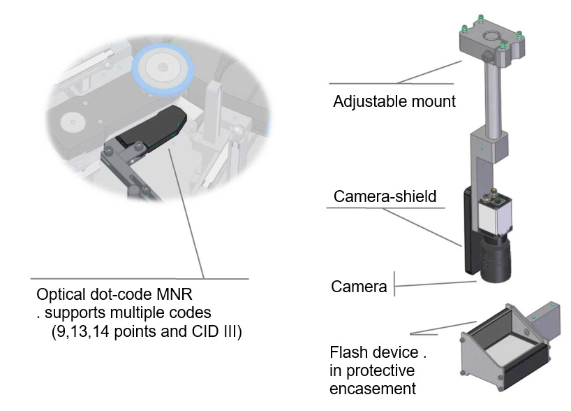
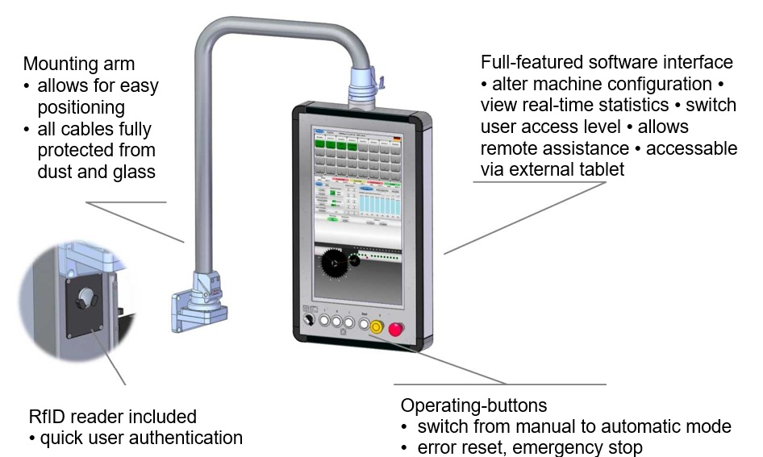

<!DOCTYPE html>
<html lang="en">
<head>
<meta charset="UTF-8">
<title>ESOMATEC | GSMneo</title>
<style>
html,body{margin:0;height:100%;overflow:hidden;background:#000;color:#fff;font-family:'Segoe UI',sans-serif}
video{position:fixed;top:0;left:0;width:100%;height:100%;object-fit:cover;filter:brightness(.65)}

.slide-box{
  position:absolute;top:50%;left:50%;transform:translate(-50%,-50%);
  width:70vw;max-width:900px;min-height:60vh;
  background:rgba(0,0,0,.55);border:2px solid #00e0ff;border-radius:10px;
  padding:50px;display:flex;flex-direction:column;justify-content:center;align-items:center;text-align:center;font-size:1.3em;line-height:1.6;overflow-y:auto;
}
.slide-box h1{color:#00e0ff;font-size:2.5em;margin:.2em 0}
.slide-box ul{text-align:left;padding-left:1.5em;margin:.5em 0}
.slide-box img{max-width:100%;max-height:45vh;border-radius:6px;margin:15px 0}
</style>
</head>
<body>
<video autoplay muted loop playsinline><source src="bg.mp4" type="video/mp4"></video>

<div id="slide" class="slide-box"></div>

<script>
/* ваши 30 слайдов (картинки и текст как в index_gsm.txt) */
const slides = [
  '<h1>ESOMATEC | GSMneo</h1><h2>Production Control Systems – Hi-Tech Glass Inspection Machine</h2>',
  '<h1>Preface</h1><ul><li>Introduction Esomatec GmbH</li><li>Esomatec Portfolio Overview</li><li>GSM – Glass Inspection Machine</li><li>Travel through the Machine</li><li>Inspection and Detection Units</li><li>Questions & Answers</li></ul>',
  '<h1>The Company</h1><ul><li>Esomatec GmbH – based near Bremen (Germany)</li><li>Operating since 2011</li><li>Grown out of Busch&Spreen / Heye International</li><li>Dynamic and flexible company</li><li>First market appearance 2012 – glasstec Düsseldorf</li></ul>',
  '<h1>The Company</h1><ul><li>Experienced employees (up to 30 years in glass industry)</li><li>Engineers, mechanics, electricians, system developers</li><li>Portfolio:<br>– Testing systems<br>– Tooling sets & spare parts<br>– Product development & cold-end services</li></ul>',
  '<h1>Portfolio – GDM</h1><ul><li>Wall Thickness Measuring Device</li><li>7-inch touch screen</li><li>Up to four measuring units</li><li>19-inch industrial case</li></ul>',
  '<h1>Portfolio – GDM</h1><ul><li>Chromatic & contactless measurement</li><li>Supports non-round & engraved containers</li><li>Connects to Emhart, Heye, MSC, SGCC, B&S</li></ul>',
  '<h1>Portfolio – RME</h1><ul><li>RME Check detection system</li><li>Compatible with Tiama & HI machines</li><li>Sender-receiver principle</li></ul>',
  '<h1>Portfolio – Toolings</h1><ul><li>Toolings for Inspection Machines</li><li>Infeed / outfeed equipment</li><li>Complete star-wheel assembly</li></ul>',
  '<h1>Portfolio – Toolings</h1><ul><li>Star wheels, infeed screws, guides, washers, gauges, mounts</li></ul>',
  '<h1>Portfolio – Service</h1><ul><li>Spare parts manufacturing</li><li>Customer-specific development</li><li>Interfaces to line/statistics systems</li></ul>',
  '<h1>GSMneo</h1>',
  '<h1>GSMneo</h1><ul><li>Star-wheel glass inspection machine</li><li>10-500 containers / min</li><li>Round & non-round containers</li><li>Up to 10 measurement stations</li><li>Fast job change, kinetic ejector</li></ul>',
  '<h1>GSMneo</h1><ul><li>Moveable Service Platform</li><li>Height adjustment per container</li><li>All units moved at once</li></ul>',
  '<h1>GSMneo</h1><ul><li>Outfeed star wheel – no slack</li><li>Kinetic ejector – precise positioning</li></ul>',
  '<h1>GSMneo</h1><ul><li>Fast job change – minimal downtime</li><li>Symmetrical design – fewer spare parts</li></ul><video autoplay muted loop playsinline style="max-width:100%;border-radius:6px"><source src="media/Fast jobchange.mp4" type="video/mp4"></video>',
  '<h1>GSMneo</h1><ul><li>Gauge / finish diameter</li><li>Planity, height, wall thickness</li><li>Ovality detection (non-contact)</li></ul>',
  '<h1>GSMneo</h1><ul><li>Mold number reader (Dot & Digital)</li><li>LED check detection</li><li>LoF (Line-over-Finish)</li></ul>',
  '<h1>GSMneo – Infeed</h1><ul><li>Infeed stopper – software / button</li><li>Feathered pressure adjustment</li></ul>',
  '<h1>GSMneo – Infeed</h1><ul><li>Height & servo drive</li><li>Article-specific screws</li></ul>',
  '<h1>GSMneo – Rotations</h1><ul><li>Rotating wheel + feathered pressure</li><li>Servo drive, adjustable mount</li></ul>',
  '<h1>GSMneo – Extrusion</h1><ul><li>Custom extrusion star, height adjustable</li><li>Servo synchronization – no slack</li></ul>',
  '<h1>GSMneo – Ejector</h1><ul><li>Linear-servo accelerator</li><li>Rubber-coated hammer</li></ul>',
  '<h1>GSMneo – Ejection</h1><ul><li>Hammer, outlet, light-barrier control</li></ul>',
  '<h1>GSMneo – Planity</h1><ul><li>Linear-drive planity device</li><li>Exchangeable heads (bottle / jar)</li></ul>',
  '<h1>GSMneo – Gauging</h1><ul><li>Servo-driven gauging device</li><li>Exchangeable heads, all mouths</li></ul>',
  '<h1>Travel Through Machine</h1>',
  '<h1>Esomatec GmbH</h1><p>Your partner for production control systems.<br>Thank you for listening.</p>',
  '<h1>Questions and Answers</h1>',
  '<h1>Thank you</h1><p>A business lives through its employees, its suppliers and its clients.</p>'
];

/* пролистывание 0-29 */
let current = 0;
const slideEl = document.getElementById('slide');

function render(){
  slideEl.innerHTML = slides[current];
}
function nextSlide(){
  current = (current+1)%slides.length;
  render();
}
function prevSlide(){
  current = (current-1+slides.length)%slides.length;
  render();
}
document.addEventListener('keydown',e=>{
  if(e.key==='ArrowRight'||e.key==='ArrowDown') nextSlide();
  if(e.key==='ArrowLeft'||e.key==='ArrowUp') prevSlide();
});
render();
</script>
</body>
</html>
